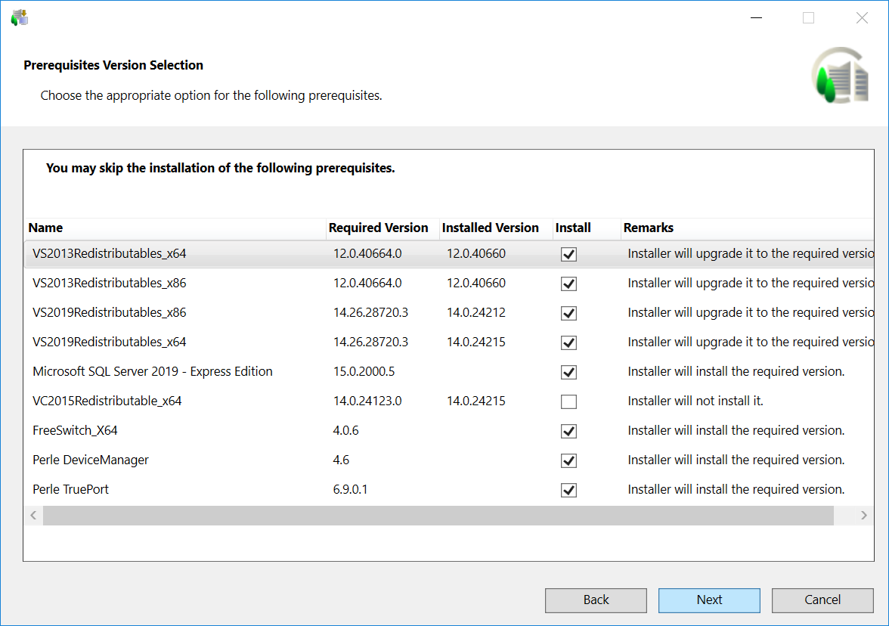

Verify the Prerequisite Version Selection Option
- By default, all the previously installed prerequisites are upgraded by default, if they are available in the distribution media. At the same time the prerequisites, listed in the
<SkipInstallation>section are skipped.
NOTE: The prerequisite, listed in the<SkipInstallation>section, for example Microsoft SQL Server 2022 - Express Edition, is skipped only when the valueAskUser = 1andMandatory = 0is configured in the GMS/EMConfig.xml file.
The Prerequisite Version Selection dialog box only displays when there is any conflict with the installed prerequisites and the<AutoResolvePrerequisiteConflict>is set toFalsein the GMS Platform.xml file. It lists the required versions of the installed prerequisites and recommends you to install the required version, if the installed version is not compatible.
If you have already installed V4.2 with Microsoft SQL Server 2014 - Express Edition, you do not need to uninstall it. During upgrade Installer upgrades it to the latest version, Microsoft SQL Server 2022 - Express Edition.
However, in V4.2 if you have skipped the Microsoft SQL Server 2014 - Express Edition installation during installation or used your own SQL Server, still in V4.2 required SQL Client components prerequisites are installed. Now, during upgrade, Installer upgrades to required Microsoft SQL Server 2022 - Express Edition and installs/upgrades required SQL Client components prerequisites.
You can also skip Microsoft SQL Server 2022 - Express Edition. Note that the required SQL Client components prerequisites are still upgraded/installed. 
- Click Next.
- If the disk space required for the selected setup type installation on the selected drive and the temporary disk space required only for the time of installation (always calculated only for the system drive), is less, then the Installation Folder dialog box displays. You cannot change the path of the installation.
- Click Next.
NOTE: If a negative number in red displays in the Remaining Space field, then Next is unavailable and a warning message displays. You must re-run the setup after making the necessary adjustments in the available disk space. (See Tips to Free Up Disk Space in Installation Folder > Verify the Installation Environment) - If any inconsistency exists with the EULA entry in the GMS Platform.xml file (for example, EULA entry missing) or with the EULA file (for example, EULA file missing in the software distribution), the License Agreement dialog box displays.
- Accept the terms of the license agreement by selecting Agree for each license that you want to install and then click Next.